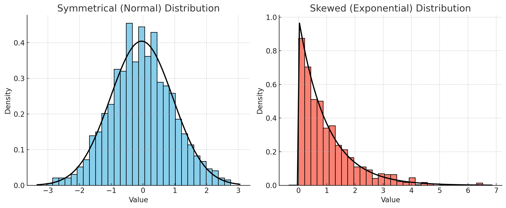
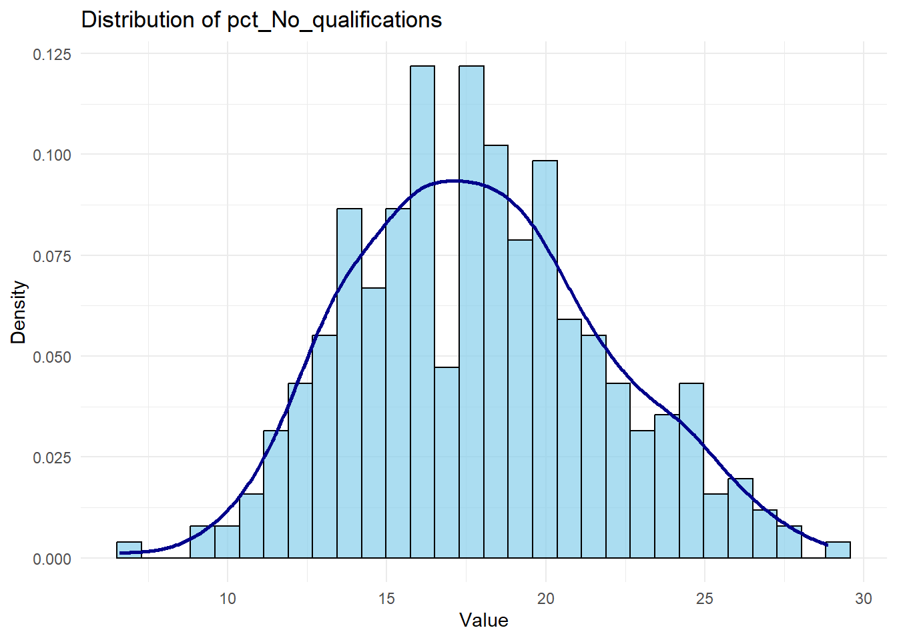

2Lab: Correlation, Single, and Multiple Linear Regression
Author
Gabriele Filomena
Published
November 14, 2024
In this week’s practical, we will review how to calculate and visualise correlation coefficients between variables. This practical is split into two parts. The first part focuses on measuring the correlation between and visualising the relationship between continuous variables. The second part goes through the implementation of a Linear Regression Model, again between continuous variables.
Before getting into it, have a look at this resource, it really helps understand how regression models work.
Learning Objectives:
Visualise the association between two continuous variables using a scatterplot.
Measure the strength of the association between two variables by calculating their correlation coefficient.
Build a formal regression model.
Understand how to estimate and interpret a multiple linear regression model.
Notes:Note for the practical: copy/edit/document the code in your own .qmd file. The code is supposed to be run as if the script was placed in the course folder or in the folder labs.
Note on file paths: When calling the read.csv function, the path will vary depending on the location of the script it is being executed or your working directory (WD):
If the script or your WD is in a sub-folder (e.g., labs), use "../data/Census2021/EW_DistrictPercentages.csv". The .. tells R to go one level up to the main directory (stats/) and then access the data/ folder. Example: read.csv("../data/Census2021/EW_DistrictPercentages.csv").
If the script is in the main directory (e.g. inside stats/), you can access the data directly using "data/Census2021/EW_DistrictPercentages.csv". Here, no .. is necessary as the data/ folder is directly accessible from the working directory. Example: read.csv("data/Census2021/EW_DistrictPercentages.csv")
2.1 Part I. Correlation
2.1.1 Data Overview: Descriptive Statistics:
Let’s start by picking one dataset derived from the English-Wales 2021 Census data. You can choose one dataset that aggregates data either at a) county, b) district, or c) ward-level. Lower Tier Local Authority-, Region-, and Country-level data is also available in the data folder.
see also: https://canvas.liverpool.ac.uk/courses/77895/pages/census-data-2021
Q1. Complete the table below by specifying each variable type (continuous or categorical) and reporting its mean and standard deviation.
Variable Name
Type (Continuous or Categorical)
Mean
Standard Deviation
pct_Very_bad_health
pct_No_qualifications
pct_Males
pct_Higher_manager_prof
2.1.2 Simple visualisation for continuous data
You can visualise the relationship between two continuous variables using a scatter plot. Using the chosen census datasets, visualise the association between the % of population with bad health (pct_Very_bad_health) and each of the following:
the % of population with no qualifications (pct_No_qualifications);
the % of population aged 65 to 84 (pct_Age_65_to_84);
the % of population in a married couple (pct_Married_couple);
the % of population in a Higher Managerial or Professional occupation (pct_Higher_manager_prof).
# Scatterplot for each variable variables variables <-c("pct_No_qualifications", "pct_Age_65_to_84", "pct_Married_couple", "pct_Higher_manager_prof")# Loop to create scatterplots and calculate correlations # x and y variables for each scatter plot,for (var in variables) { # Scatterplot ggplot(census, aes_string(x = var, y ="pct_Very_bad_health")) +geom_point() +labs(title =paste("Scatterplot of pct_Very_bad_health vs", var), x = var, y ="pct_Very_bad_health") +theme_minimal()}
Warning: `aes_string()` was deprecated in ggplot2 3.0.0.
ℹ Please use tidy evaluation idioms with `aes()`.
ℹ See also `vignette("ggplot2-in-packages")` for more information.
Q2. Which of the associations do you think is strongest, which one is the weakest?
As noted, before, an observed association between two variables is no guarantee of causation. It could be that the observed association is:
simply a chance one due to sampling uncertainty;
caused by some third underlying variable which explains the spatial variation of both of the variables in the scatterplot;
due to the inherent arbitrariness of the boundaries used to define the areas being analysed (the ‘Modifiable Area Unit Problem’).
Q3. Setting these caveats to one side, are the associations observed in the scatter-plots suggestive of any causative mechanisms of bad health?
Rather than relying upon an impressionistic view of the strength of the association between two variables, we can measure that association by calculating the relevant correlation coefficient. The Table below identifies the statistically appropriate measure of correlation to use between two continuous variables.
Variable Data Type
Measure of Correlation
Range
Both symmetrically distributed
Pearson’s
-1 to +1
One or both with a skewed distribution
Spearman’s Rank
-1 to +1
Different Calculation Methods: Pearson’s correlation assumes linear relationships and is suitable for symmetrically distributed (normally distributed) variables, measuring the strength of the linear relationship. Spearman’s rank correlation, however, works on ranked data, so it’s more suitable for skewed data or variables with non-linear relationships, measuring the strength and direction of a monotonic relationship.
When calculating correlation for a single pair of variables, select the method that best fits their data distribution:
- Use **Pearson’s** if both variables are symmetrically distributed.
- Use **Spearman’s** if one or both variables are skewed.

You can check the distribution of a variable (e.g. pct_No_qualifications like this):
# Plot histogram with density overlay for a chosen variable (e.g., 'pct_No_qualifications')ggplot(census, aes(x = pct_No_qualifications)) +geom_histogram(aes(y = ..density..), bins =30, color ="black", fill ="skyblue", alpha =0.7) +geom_density(color ="darkblue", size =1) +labs(title ="Distribution of pct_No_qualifications", x ="Value", y ="Density") +theme_minimal()
Warning: Using `size` aesthetic for lines was deprecated in ggplot2 3.4.0.
ℹ Please use `linewidth` instead.
Warning: The dot-dot notation (`..density..`) was deprecated in ggplot2 3.4.0.
ℹ Please use `after_stat(density)` instead.

When analyzing multiple pairs of variables, using different measures (Pearson for some pairs, Spearman for others) creates inconsistencies since Pearson and Spearman values aren’t directly comparable in size due to their different calculation methods. To maintain consistency across comparisons, calculate both Pearson’s and Spearman’s correlations for each pair. Check if the trends align (both showing strong, weak, or moderate correlation in the same direction). This consistency check can give confidence that the relationships observed are not dependent on the correlation method chosen. While in a report, you’d typically include only one set of correlations (usually Pearson’s if the relationships appear linear), calculating both can validate that your observations aren’t an artifact of the correlation method.
Research Question 1: Which of our selected variables are most strongly correlated with % of population with bad health?
To answer this question, complete the Table below by editing/running this code:.
spearman_correlation <-cor(census$pct_Very_bad_health, census$pct_No_qualifications, use ="complete.obs", method ="spearman")cat("Spearman Correlation:", spearman_correlation, "\n")
Spearman Correlation: 0.7785197
Covariates
Pearson
Spearman
pct_Very_bad_health - pct_No_qualifications
pct_Very_bad_health - pct_Age_65_to_84
pct_Very_bad_health - pct_Married_couple
pct_Very_bad_health - pct_Higher_manager_prof
What can you make of this numbers?
If you think you have found a correlation between two variables in our dataset, this doesn’t mean that an association exists between these two variables in the population at large. The uncertainty arises because, by chance, the random sample included in our dataset might not be fully representative of the wider population.
For this reason, we need to verify whether the correlation is statistically significant,
# significance test for pearson, for examplepearson_test <-cor.test(census$pct_Very_bad_health, census$pct_No_qualifications, method ="pearson", use ="complete.obs")pearson_test
Pearson's product-moment correlation
data: census$pct_Very_bad_health and census$pct_No_qualifications
t = 21.347, df = 329, p-value < 2.2e-16
alternative hypothesis: true correlation is not equal to 0
95 percent confidence interval:
0.7128142 0.8038232
sample estimates:
cor
0.7620569
Look at https://www.rdocumentation.org/packages/stats/versions/3.6.2/topics/cor.test for details about the function. But in general, when calculating the correlation between two variables, a p-value accompanies the correlation coefficient to indicate the statistical significance of the observed association. This p-value tests the null hypothesis that there is no association between the two variables (i.e., that the correlation is zero).
When interpreting p-values, certain thresholds denote different levels of confidence. A p-value less than 0.05 is generally considered statistically significant at the 95% confidence level, suggesting that we can be 95% confident there is an association between the variables in the broader population. When the p-value is below 0.01, the result is significant at the 99% confidence level, meaning we have even greater confidence (99%) that an association exists. Sometimes, on research papers or tables significance levels are denoted with asterisks: one asterisk (*) typically indicates significance at the 95% level (p < 0.05), two asterisks (**) significance at the 99% level (p < 0.01), three asterisks (***) significance at the 99.99% level (p < 0.01).
Typically, p-values are reported under labels such as “Sig (2-tailed),” where “2-tailed” refers to the fact that the test considers both directions (positive and negative correlations). Reporting the exact p-value (e.g., p = 0.002) is more informative than using thresholds alone, as it gives a clearer picture of how strongly the data contradicts the null hypothesis of no association.
In a nutshell, lower p-values suggest a stronger statistical basis for believing that an observed correlation is not due to random chance. A statistically significant p-value reinforces confidence that an association likely exists in the wider population, though it does not imply causation.
2.1.3 Part. 2: Implementing a Linear Regression Model
A key goal of data analysis is to explore the potential factors of health at the local district level. So far, we have used cross-tabulations and various bivariate correlation analysis methods to explore the relationships between variables. One key limitation of standard correlation analysis is that it remains hard to look at the associations of an outcome/dependent variable to multiple independent/predictor variables at the same time. Regression analysis provides a very useful and flexible methodological framework for such a purpose. Therefore, we will investigate how various local factors impact residents’ health by building a multiple linear regression model in R.
We use pct_Very_bad_health as a proxy for residents’ health.
Research Question 2: How do local factors affect residents’ health?
Dependent (or Outcome) Variable:
% of population with bad health (pct_Very_bad_health).
Independent (or Predictor) Variables:
% of population with no qualifications (pct_No_qualifications).
% of male population (pct_Males).
% of population in a higher managerial/professional occupation (pct_Higher_manager_prof).
Load some other Libraries
library(tidyverse)
── Attaching core tidyverse packages ──────────────────────── tidyverse 2.0.0 ──
✔ forcats 1.0.0 ✔ stringr 1.5.1
✔ lubridate 1.9.3 ✔ tibble 3.2.1
✔ purrr 1.0.2 ✔ tidyr 1.3.1
✔ readr 2.1.5
── Conflicts ────────────────────────────────────────── tidyverse_conflicts() ──
✖ dplyr::filter() masks stats::filter()
✖ dplyr::lag() masks stats::lag()
ℹ Use the conflicted package (<http://conflicted.r-lib.org/>) to force all conflicts to become errors
Regression models are the standard method for constructing predictive and explanatory models. They tell us how changes in one variable (the target variable or independent variable, \(Y\)) are associated with changes in explanatory variables, or dependent variables, \(x_1, x_2, x_3\) (\(X_n\)), etc. Classic linear regression is referred to Ordinary least squares (OLS) regression because they estimate the relationship between one or more independent variables and a dependent variable \(y\) using a hyperplane (i.e. a multi-dimensional line) that minimises the sum of the squared difference between the observed values of y and the values predicted by the model (denoted as \(\hat{y}\), \(y\)-hat).
Having seen Single Linear Regression in class - where the relationship between one independent variable and a dependent variable is modeled - we can extend this concept to situations where more than one predictor might influence the outcome. While single linear regression helps us understand the effect of ONE variable in isolation, real-world phenomena are often influenced by multiple factors simultaneously. Multiple linear regression addresses this complexity by allowing us to model the relationship between a dependent variable and multiple independent variables, providing a more comprehensive view of how various predictors contribute to changes in the outcome.
Here, regression allows us to examine the relationship between people’s health rates and multiple predictors.
Before starting, we define two hypotheses:
Null hyphotesis (\(H_0\)): For each variable \(X_n\), there is no effect of \(X_n\) on \(Y\).
Alternative hypothesis (\(H_1\)): There is an effect of\(X_n\) on Y.
We will observe if we can reject the null hypothesis.
2.1.4 Model fit
# Linear regression modelmodel <-lm(pct_Very_bad_health ~ pct_No_qualifications + pct_Males + pct_Higher_manager_prof, data = census)summary(model)
Call:
lm(formula = pct_Very_bad_health ~ pct_No_qualifications + pct_Males +
pct_Higher_manager_prof, data = census)
Residuals:
Min 1Q Median 3Q Max
-0.49028 -0.13686 -0.03516 0.09834 0.76575
Coefficients:
Estimate Std. Error t value Pr(>|t|)
(Intercept) 4.017987 0.880039 4.566 7.06e-06 ***
pct_No_qualifications 0.052959 0.005911 8.959 < 2e-16 ***
pct_Males -0.073920 0.017850 -4.141 4.40e-05 ***
pct_Higher_manager_prof -0.013088 0.004938 -2.650 0.00843 **
---
Signif. codes: 0 '***' 0.001 '**' 0.01 '*' 0.05 '.' 0.1 ' ' 1
Residual standard error: 0.2133 on 327 degrees of freedom
Multiple R-squared: 0.6105, Adjusted R-squared: 0.6069
F-statistic: 170.8 on 3 and 327 DF, p-value: < 2.2e-16
Code explanation
lm() Function:
lm() stands for “linear model” and is used to fit a linear regression model in R.
The formula syntax pct_Very_bad_health ~ pct_No_qualifications + pct_Males + pct_Higher_manager_prof specifies a relationship between:
Dependent Variable: pct_Very_bad_health.
Independent Variables: pct_No_qualifications, pct_Males, and pct_Higher_manager_prof. The model is trained on the data dataset.
Storing the Model: The model <- syntax stores the fitted model in an object called model.
summary(model) provides a detailed output of the model’s results, including:
Coefficients: Estimates of the regression slopes (i.e., how each predictor affects pct_Very_bad_health).
Standard Errors: The variability of each coefficient estimate.
t-values and p-values: Indicate the statistical significance of each predictor.
R-squared and Adjusted R-squared: Show how well the independent variables explain the variance in the dependent variable.
F-statistic: Tests the overall significance of the model.
The Estimate column in the output table tells us the rate of change between each dependent variable \(X_n\) and \(Y\).
Intercept: In the regression equation, this is \(β_0\) and it indicates the value of \(Y\) when \(X_n\) are equal to zero. Slopes: These are the other regression coefficients of an independent variable, e.g. \(β_1\), i.e. estimated average changes in \(Y\) for a one unit change in an indepdent variable, e.g. \(X_1\), when all other dependent or explanatory variables are held constant.
There are two key points worth mentioning:
The unit of\(X\) and \(Y\): you need to know what the units are of the independent and dependent variables. For instance, one unit could be one year if you have an age variable, or a one percentage point if the variable is measured in percentages (all the variables in this week’s practical).
All the other explanatory variables are held constant. It means that the coefficient of an explanatory variable \(x_1\) (e.g. \(b_1\)) should be interpreted as: a one unit change in\(x_1\) is associated with b1 units change in \(Y\), keeping other values of explanatory variables (e.g. \(x_2\), \(x_3\)) constant – for instance, \(x_2\)= 0.1 or \(x_3\)= 0.4.
For the independent variable \(X\), we can derive how changes of 1 unit for the independent are associated with the changes in pct_Very_bad_health:
For example:
The association of pct_No_qualifications is positive and strong: each increase in 1% of pct_No_qualifications is associated with an increase of 0.05% of long term illness rate.
The association of pct_Males is negative and strong: each decrease in 1% of pct_Males is associated with an increase of 0.07% of pct_Very_bad_health in the population in England and Wales.
The association of pct_Higher_manager_prof is negative but weak: each decrease in 1% of pct_Higher_manager_prof is associated with an increase of 0.013% of pct_Very_bad_health.
2.1.5.2 P-values and Significance
The t tests of regression coefficients are used to judge the statistical inferences on regression coefficients, i.e. associations between independent variables and the outcome variable. For a t-statistic of a dependent variable, there is a corresponding p-value that indicates different levels of significance in the column Pr(>|t|) and the asterisks ∗∗.
*** indicates “changes in \(X_n\) are significantly associated with changes in \(Y\) at the <0.001 level”.
** suggests that “changes in \(X_n\) are significantly associated with changes in \(Y\) between the 0.001 and (<) 0.01 levels”.
Now you should know what * means: The significance is between the 0.01 and 0.05 levels, which means that we observe a less significant (but still significant) relationship between the variables.
The p-value provides a measure of how significant the relationship is; it is an indication of whether the relationship between \(X_n\) and \(Y\) found in this data could have been found by chance. Very small p-values suggest that the level of association found here might not have come from a random sample of data.
In this case, we can say:
Given that the p-value is indicated by ***, changes in pct_No_qualifications and pct_Males are significantly associated with changes in pct_Very_bad_health at the <0.001 level; the association is highly statistically significant; we can be confident that the observed relationship between these variables and pct_Very_bad_health is not due to chance.
Given that the p-value is indicated by **, changes in pct_Higher_manager_prof are significantly associated with changes in pct_Very_bad_health at the 0.001 level. This means that the association between the indepedent and dependent variable is not one that would be found by chance in a series of random sample 99.999% of the time.
In both cases we can then confidently reject the Null hypothesis (\(H_0\): no association between dependent and indepdent variables exist).
Remember, If the p-value of a coefficient is smaller than 0.05, that coefficient is statistically significant. In this case, you can say that the relationship between this independent variable and the outcome variable is statistically significant. Contrarily, if the p-value of a coefficient is larger than 0.05 you can conclude that there is no evidence of an association or relationship between the independent variable and the outcome variable.
2.1.5.3 R-squared and Adjusted R-squared
These provide a measure of model fit. This is calculated as the difference between the actual value of \(Y\) and the value predicted by the model. In our model, the R-squared and Adjusted R-squared are greater than 0.6, thus indicating a well fitting model.
The R-squared and Adjusted R-squared values are statistical measures that indicate how well the independent variables in your model explain the variability of the dependent variable. Both R-squared and Adjusted R-squared are commonly used to evaluate the fit of a linear regression model—meaning, they help us understand how closely the model’s predictions align with the actual data. An R-squared of 0.6, for example, indicates that 60% of the variability in YYY is explained by the predictors in the model. The remaining 40% is due to other factors not captured by the model.
Adjusted R-squared also measures the goodness of fit, but it adjusts for the number of predictors in the model, accounting for the fact that adding more variables can artificially inflate R-squared without genuinely improving the model. Adjusted R-squared is especially useful when comparing models with different numbers of predictors. If Adjusted R-squared is close to or above 0.6, as in your example, it implies that the model has a strong explanatory power while not being overfit with unnecessary predictors.
A high R-squared and Adjusted R-squared indicate that the model captures much of the variation in the data, making it more reliable for predictions or for understanding the relationship between YYY and the predictor variables. However Low R-squared values suggest that the model might be missing important predictors or that the relationship between \(Y\) and the explanatory variables is not well-captured by a linear approach.
An R-squared and Adjusted R-squared over 0.6 are generally seen as signs of a well-fitting model in many fields, though the ideal values can depend on the context and the complexity of the data.
2.1.6 Interpreting the Results
# Format regression results for reportingresults_table <- coefficients %>%select(term, estimate, statistic, p.value)results_table
Q4. Complete the table above by filling in the coefficients, t-values, p-values, and indicating if each variable is statistically significant.
Variable Name
Coefficients
t-values
p-values
Significant?
pct_No_qualifications
pct_Males
pct_Higher_manager_prof
From the lecture notes, you know that the Intercept or Constant represents the estimated average value of the outcome variable when the values of all independent variables are equal to zero.
Q5. When values of pct_Males, pct_No_qualifications and pct_Higher_manager_prof are all \(zero\), what is the % of population with very bad health? Is the intercept term meaningful? Think about whether there are districts with a zero percentage of population with no qualification. Are there any districts (or zones, depending on the dataset you chose) with zero percentages of persons with no qualification in your data set?
Q6. Interpret the regression coefficients of pct_Males, pct_No_qualifications and pct_Higher_manager_prof. Do they make sense?
2.1.7 Identify factors of % bad health
Now combine the above two sections and identify factors affecting the percentage of population with very bad health. Fill in each row for the direction (positive or negative) and significance level of each variable.
Variable Name
Positive or Negative
Statistical Significance
pct_No_qualifications
pct_Higher_manager_prof
pct_Males
Q7. Think about the potential conclusions that can be drawn from the above analyses. Try to answer the research question of this practical: How do local factors affect residents’ health? Think about causation vs association and consider potential confounders when interpreting the results. How could these findings influence local health policies?
2.2 Part C: Practice and Extension
If you haven’t understood something, if you have doubts, even if they seem silly, ask.
Finish working through the practical.
Revise the material.
Extension activities (optional): Think about other potential factors of long-term illness and test your ideas with new linear regression models.